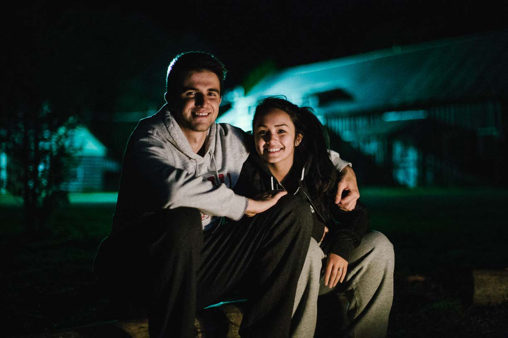
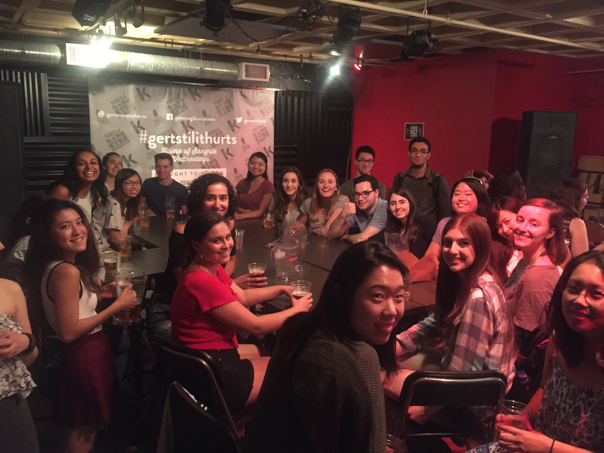
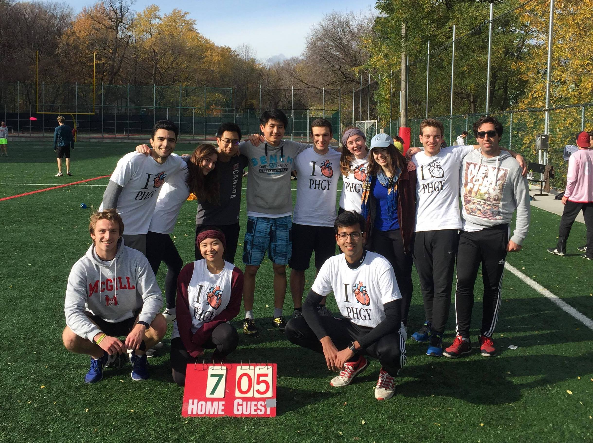
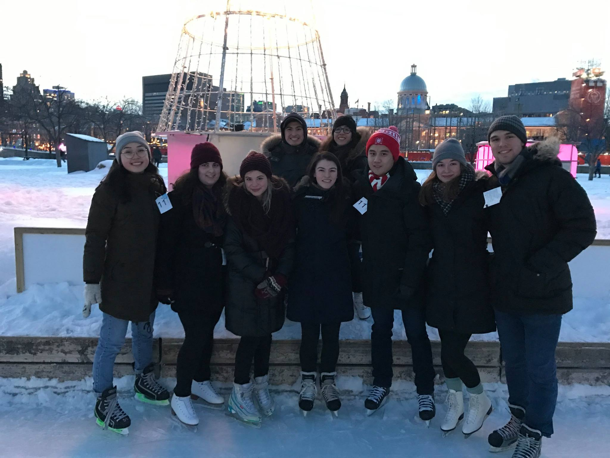
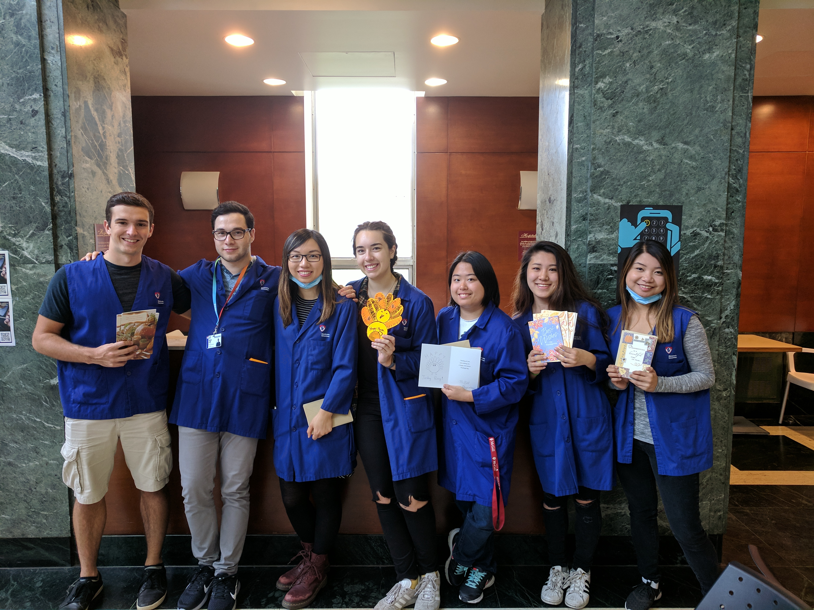
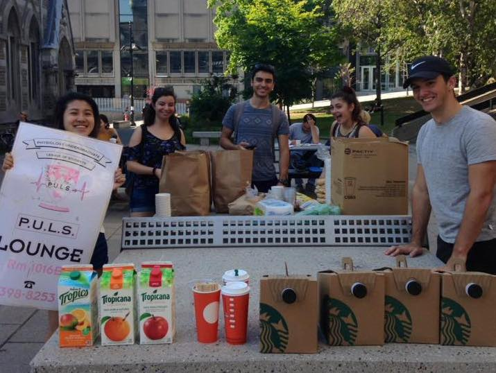
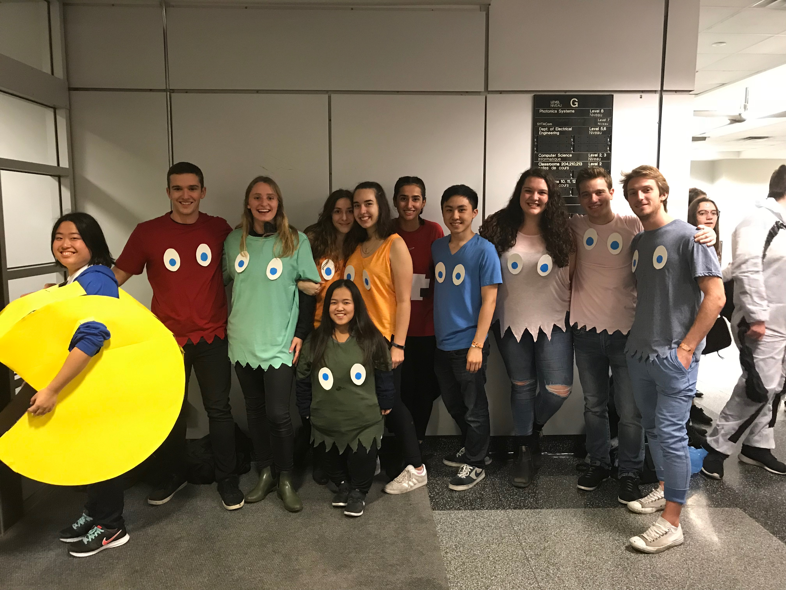
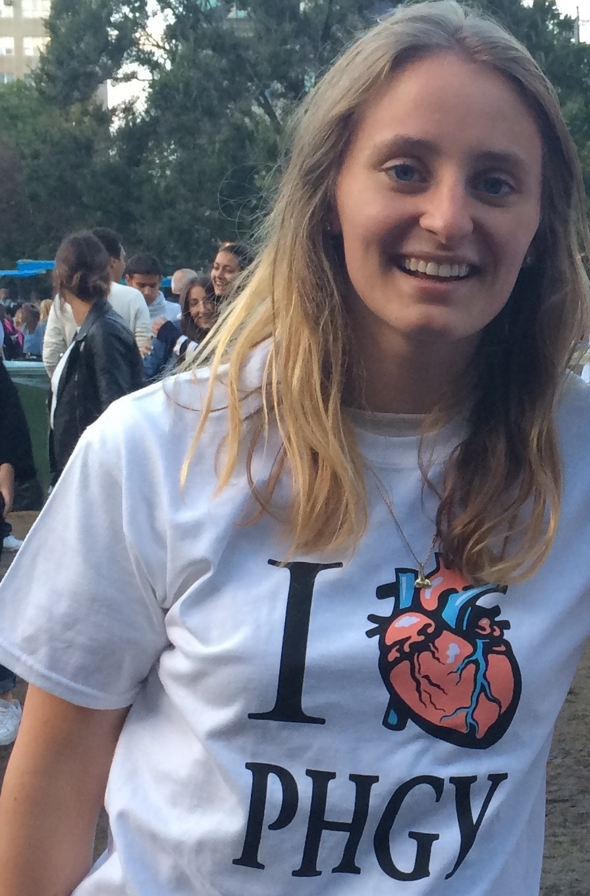

Physiology Undergraduate League of Students
Welcome
Since its inception, the Physiology Undergraduate League of Students has been the elected student society at the service of undergraduate students in the Department of Physiology at McGill University.
- 
Photo Credits: Seb Vautour
- 
PHGY Friday
- 
Intercalated Discs: Ultimate Intramurals
- 
Photo Credits: Seb Vautour

PULS Retreat: HSM Edition
- 
Thanksgiving at MUHC

Photo Credits: Seb Vautour
- 
PULS U1 Breakfast

Photo Credits: Seb Vautour
- 
Crawl-O-Ween: Halloween Apartment Crawl

Untouchaballs: Dodgeball Intramurals
PULS Executive Council Elections
We are currently in election season. See below for the individual candidate platforms. You can also see all their Facebook events.
All students registered in a physiology undergraduate program are eligible to vote in the elections.
This includes students from Major Physiology, Liberal Physiology, Honours Physiology, Joint Physiology and Mathematics, Joint Physiology and Physics, and Interdepartmental Honours in Immunology.
The campaigning period is currently ongoing and the voting period is scheduled from Mar 25 at 12:00AM to Mar 31, 2018 at 11:59PM. Voting is done online using the SSMU Simply Voting system and is easy, secure, and confidencial. Please make sure to vote for next year's council! It literally takes 30 seconds!
Candidates
Zoe Verzani
Candidate for President

I’m Zoe, a U2 Physiology student pursuing a minor in Environment, and I’m running for PULS president! Anyone that knows me knows how much I love PULS and PHGY! I have been on council for the past two years, first as U1 Representative and now as VP Finance, and have found my involvement in PULS to be such an incredibly rewarding experience that I would love to continue being part of it next year.
As PULS president, I have three major objectives that I plan to address throughout the upcoming year.
- Connect the Physiology Department with the Physiology Student Body
- Though the Department has our best interest in mind, they are sometimes not aware of what the students actually want and need.
- Create anonymous feedback forms for students to fill out after each semester so PULS can help address these concerns in collaboration with the department.
- Continue this year’s councils work on hiring official TAs for PHGY 311.
- Host more Academic Events and Writing/Research Workshops
- I plan on continuing Synapse (U1-U3 mentorship program) and expanding its influence on U1 PHGYs.
- I want PHGY students to scream “Hey that’s my PHGY mentor!” louder than most McGill students scream “Hey that’s my frosh leader!”
- Hosting writing and research workshops for PHGY 300 courses.
- Continuing the PHGY in Research Event PULS organized last year to help connect students to the latest research in the Physiology department and help students find lab positions.
-
PHGY Pride
- Hosting more social events like PHGY Fridays.
- Expanding the turnout to the Physiology Intramural Teams by getting more U1 PHGY students involved.
- Creating new social events like PHGY Run (monthly running session up the mountain in the Fall semester)
Kelsey Capiendo
Candidate for Vice-President

Hey PHGY! I'm Kelsey and I'm excited to be running for your Vice President!! Serving as U2 Representative on PULS, I have become more involved in the physiology community and would love the opportunity to continue strengthening it. Yes, I know this is always said, but I truly feel like our sense of community has grown this past year and can continue doing so!
Part of building a community is inclusivity. Ideally, I want all physiology students, including PHGY Physics, PHGY Math and IHI students, to not only feel welcomed at PHGY events, but also be excited to come! Thus, I plan on making sure there are events in different areas to accommodate all the interests of PHGY students. An idea I plan on helping implement is creating a sub-committee for PULS, so students who aren't on council can still be involved!
I feel the VP's responsibility of attending SUS GC meetings is often overlooked and improving the communication between SUS and PHGY students would be beneficial. I feel as though a lot of PHGY students didn't know about many great events held by SUS. Thus, I plan on making SUS information and events more apparent to all PHGY students.
Lastly, I want to improve awareness and help mental health issues among PHGY students. McGill is hard and physiology isn't the easiest major. I want to make information about mental health services such as McGill Psychiatry, Counselling and OSD more accessible, as well as information and advice specifically in a PHGY aspect on deferring exams/midterms, supplemental exams or what to do if you fail a class. Furthermore, I want to prevent future PHGY students from feeling overwhelmed by improving class curriculums and providing more class resources.
Overall, I want to help all PHGY students have a positive experience in PHGY!
Yossef Levin
Candidate for Vice-President

Hey PHGY/IHI friends, my name is Yossef Levin and I’m excited to announce that I am running for PULS Vice-President for the 2018-2019 academic year. Over the past year, I have had the amazing opportunity of being the PULS U2 Representative and I plan to use that experience moving into next year. On that note, if elected, I hope to play a more active Vice-Presidential role by helping-out other members on council with their relevant activities so that they can be accomplished more quickly and effectively. For instance, working together with the VP-Academic, I plan to finally obtain “official” TAs for the PHGY 311 course, something that has been an issue, over the past few years.
Furthermore, historically, attendance to PULS events has not always been very high, especially the year specific events, amongst others. As Vice-President, I plan to work on this situation in order to increase attendance by making students feel more welcome. On that note, if students ever have any issues they want to bring up, or even a personal grievance, I will work very hard to ensure that everything they have to say is attended to in the best way possible.
Finally, one of the defined roles of the Vice-president is to work with SUS and by virtue other councils in the Faculty of Science. Given this responsibility, I plan to push for more joint events that would involve more departments than in previous years. By doing such, physiology students will be able to feel more involved with the McGill community at large beyond the people they meet in their classes. All in all, by creating more inter-departmental events, students will feel more comfortable expanding their horizons beyond the physiology department, which will inevitably be beneficial for their university experience.
Together, let’s a make a difference next year!
Salut, je m'appelle Yossef Levin et je suis heureux de vous annoncer ma candidature de vice-président pour l'année académique 2018-2019. Au cours de la dernière année, j'ai eu l'occasion incroyablement enrichissante d'être le représentant de l’année U2 en PULS et je prévois utiliser cette expérience pour l'année prochaine. Par conséquent, si je suis élu, j'espère de jouer un rôle plus actif de vice-président en aidant les autres membres du conseil avec leurs activités pertinentes afin qu'elles puissent être accomplies plus rapidement et plus efficacement. Par exemple, en travaillant avec le VP-Académique, j'ai l'intention d'obtenir finalement des TA «officielles» pour le cours PHGY 311, ce qui été un problème, au cours des dernières années.
En outre, historiquement, la participation aux événements PULS n'a pas été toujours très élevée. En tant que vice-président, j'ai l'intention de travailler sur cette situation afin d'augmenter la participation en faisant en sorte que les étudiants se sentent plus bienvenus. Pour ajouter, si les étudiants ont des problèmes qu'ils veulent soulever, ou même un grief personnel, je travaillerai très fort pour s'assurer que tout ce qu'ils ont à dire est traité de la meilleure façon possible.
Enfin, l'un des rôles définis du vice-président est de travailler avec SUS et d'autres conseils de la Faculté des sciences. Compte tenu de cette responsabilité, j'ai l'intention d’ajouter plus d'événements-conjoints qui impliqueraient plus de départements que les années précédentes. En faisant cela, les étudiants en physiologie pourront se sentir plus impliqués dans la communauté de McGill au-delà des personnes qu'ils rencontrent dans leurs cours. Dans l'ensemble, en créant plus d'événements interdépartementaux, les étudiants se sentiront plus à l'aise d'élargir leurs horizons au-delà du département de physiologie, ce qui sera inévitablement bénéfique pour leur expérience universitaire.
Ensemble, faisons une différence!
Jamie Halperin
Candidate for VP Finance
Hey PHGY! My name is Jamie and I’m very excited to be running for VP Finance on PULS! After serving as U1 Rep this year, I’m extremely motivated to continue to serve the PHGY community!
- A budget that makes sense -
Regardless of the specific elected position you hold, it is my belief that representation should always be the top priority. That’s why my #1 goal as VP Finance would be to make small changes to the budget so that it would better reflect the interests of the student body.
- This past year, PULS spent $200-300 on U1/U2/U3 events that sometimes attracted less than 5 people
- But we’ve been capping free beer at PHGY Fridays at around $150 even though we usually get 20-30 people!
- We can do better!
- A bigger budget! -
I also want to increase fundraising efforts next year so we can make PULS events even more memorable (especially by including more free food)!
- To achieve this, my first strategy is to schedule more food sales around campus, with the goal of having 1 each week. Samosas, baked goods, even pancakes fresh off the griddle are coming your way!
- My second strategy is to sell ad space in NTCs. I would target services that could be relevant to PHGY students, such as MCAT prep courses.
These ads would never appear in the middle of the notes themselves but be printed on separate pages that can easily be discarded!
Sakiko Ohashi
Candidate for VP Finance
Hello PHGY+IHI! My name is Sakiko Ohashi and I am honored to announce my candidacy for the position of VP Finance in the 2018-2019 PULS election!
Having the privilege to be a part of PULS as a U1 Representative this year has been a humbling experience, and I would love to have the opportunity to be your next VP Finance.
Currently holding the title of VP Events on the Japanese Student Association, I hope to utilize the experience I have gained through this position to efficiently budget PULS finances.
Some goals I would like to achieve if elected include the following:
Transparency—I would make sure that students in the department are aware of how PULS budgets their finances. If elected, I would make sure that PULS ’s budgets and audits for specific events are made available for viewing and discussion to students upon request.
Sponsorship—I believe that sponsorships play a key role in the success of many of PULS’s endeavors throughout the year. That being said, I would find and recruit more sponsors should I be elected; this would not only potentially increase our budget but would additionally increase connections and opportunities for students.
Connections with the department—I would take the initiative and effort to better connect with the administrative department, especially in terms of finances, for more efficient and transparent processes on various projects.
Funding and fundraising—I would collaborate closely with the Charity Director to take initiative in increasing fund raising. Moreover, I would apply early for more funding, which would include (but are not limited to) the SUS Special Projects Fund and Student Space Improvement Fund. This would reduce the financial strain on PULS, allowing for a higher quality in the provision of services.
Thank you so much for your time and consideration!!
Elya Quesnel
Candidate for VP Academic
Hi!
My name is Elya Quesnel, I’m a U2 student in Physiology, and I am super excited to be running to be your next VP Academic!
My goal is to work to make hands-on opportunities more easily accessible, while continuing to push for more learning resources.
During my years in physiology, be it in class, at PHGY Fridays, or at ultimate and/or dodgeball games, I have had the chance to meet many hard-working people. However, I have also realized how dense and difficult this program can be. It becomes hard to pursue outside opportunities and keep up with the workload.
As your VP Academic, I would act as a liaison between physiology students and the department. I have become very familiar with the faculty this past year, as I have worked for professors in our courses through research. I have also had the chance to work with directors and faculty lecturers at McGill on launching mentalhealthbridge.com to increase mental health resources’ awareness.
Regarding courses, I want to push for:
- Practice sets and textbooks – as optional additional resources.
- Tutorials in PHGY 311 and PHGY 312, offered by the faculty.
- Slides to be released before every class.
Additionally, I wish to:
- Have additional options for humanity and writing courses as complementary courses. This was started by our current VP Academic Simona Bene Watts, I would really like to continue it.
- Build a platform as a page on our PULS website, where professors can post research opportunities, like 396 projects, and clubs can list volunteering positions.
The people and content of this program make me very proud to be a part of it. I want to do my absolute best to ensure that whatever your goal, the resources and opportunities you need are available and/or more easily accessible.
Bonjour,
Je m’appelle Elya Quesnel, je suis actuellement en U2 Physiologie. Je suis très heureuse de me présenter pour devenir votre prochain VP Académique.
Mon objectif est de pousser pour plus de ressources en cours, comme d’opportunités en dehors de la classe.
Depuis que j’ai commencé Physiologie, j’ai pu rencontrer en cours, au PHGY Fridays, et pendant nos jeux sportifs de nombreux élèves qui travaillent dure pour ce programme. Aussi je me suis aussi vite rendue compte de la charge importante de travail et qui rend difficile de participer à d’autres activités extrascolaires.
En tant que votre VP Académique, je serais chargée d’établir une ligne de communication entre le département et les élèves. Cette année j’ai eu la chance de mieux connaître la faculté. J’ai pu travailler pour plusieurs de nos professeurs, dans leurs laboratoires. J’ai aussi travaillé à mettre en place mentalhealthbridge.com avec plusieurs membres de la communauté McGill pour agrandir la sensibilisation au nombre de ressources qui est accessible aux étudiants.
Comme projets, je veux travailler à ajouter :
- Des Practice Sets et Manuels comme ressources optionnelles.
- Des tutoriels offerts par la faculté en PHGY 311 et PHGY 312.
- Que les slides soient distribuées avant chaque lecture.
- Avoir plus d’options pour prendre des cours en sciences humaines comme cours complémentaires. Ceci a été commencé par notre VP Académique actuelle, Simona Bene Watts. J’aimerai beaucoup le continuer.
- Créer une plateforme, comme une page sur le site PULS, où des opportunités de recherches, comme des 396 projets, ou d’autres de type volontariat, seront postées.
Si je suis élue VP Académique, je veux travailler de mon mieux pour que tous, dans ce programme, puissent avoir les ressources et les opportunités dont ils ont besoin pour leur trajectoire personnelle.
Mish Hukamdad
Candidate for VP Academic
Hi, I’m Mish and I’m running to be your VP Academic next year! I’m in U2 Honours Physiology and I’ve served as the Charity Director for PULS this year.
Currently, Physiology students have a very limited selection of ULS courses available to them. If elected, I will ensure that students have a broader range of ULS/ULP courses to choose from, which will give students more variety and flexibility in their final years of study.
One of my goals is to create more research opportunities for students. If elected, I plan to organize numerous events throughout the semester which will aim to:
- Inform students of the current research being undertaken by professors in Physiology.
- Provide students with the opportunity to network and communicate with professors currently undertaking research.
- Advise students on how they can successfully acquire research positions.
PHGY 212/213 courses are currently worth only 1 credit, however these courses take up a significant amount of weekly hours. If elected, I plan to bring up this issue at the monthly Academic Committee meetings and advocate that these courses be worth more than 1 credit.
In past years, a common problem has been that the final exams for PHGY courses have been scheduled very close together. I will ensure that there is no overlap between PHGY courses in the final exam schedule, which will allow students to devote more time and focus to each individual course.
Meaghan Storey
Candidate for VP Internal
Hey PHGY!! I’m Meaghan and I’m very excited to be running for VP Internal for 2018-2019.
I chose to run for VP Internal because I have met so many amazing PHGY students through the events organized by VP Internals in the past. This position plays a crucial role in creating a community outside of lectures and labs. As a U1 student, I really didn’t know anyone majoring in physiology. Social events were a great way to meet people and get awesome advice and insight from upper year students. PHGY is not an easy major, to say the least, so I plan on creating events that are fun and stress-free. PHGY Fridays and free beer are very near and dear to my heart, and I plan on continuing this tradition into next year. Beyond apartments crawls, Science Games, and semi-formal, I plan on looking into other events such as laser tag, paint balling, karaoke, and potentially starting a new annual event - PHGY Olympics. I would also love to hear ideas from other PHGY students as these events are for you to forget about school and have some fun. I am very excited to return for my final year and make it my most memorable year with PHGY!
Angel Yu
Candidate for VP Athetlics & Publicity
“Exercise gives you endorphins. Endorphins make you happy. Happy people ace their exams. They just do.”
–Elle Woods (sort of).
Hi Phgy/IHI peeps,
My name is Angel and I'm hoping to become your VP Athletics & Publicity for the 2018-2019 academic year.
Due to the rigorous nature of our program, it is absolutely essential that we take care of ourselves, both physically and mentally. And as a varsity athlete, I can confidently attest to the fact that regular exercise does just that and more. (I'm sure I don't need to tell a group of science students all the benefits of exercise and endorphins.)
However, in sort of a catch-22 situation, due to the rigorous nature of our program, it can be so hard to find the time and the motivation to exercise. That's where I come in. As VP Athletics & Publicity, I want to organize a variety of initiatives, so that there's something for everyone. I'd like to continue the tradition of organizing Phgy intramural teams, start a gym club where members would go to the gym together once a week (it's so much easier to motivate yourself to go when there are other people counting on you too), and organize events that involve fun ways of exercising such as visiting a trampoline or a rock-climbing gym, as well as regular hikes up Mont Royal for that beautiful view. These are just some examples, and I'm always open to suggestions!
Monika Noble
Candidate for U3 Representative
Hey phgy friends! My name is Monika, I’m currently working towards completing my major in physiology (and classics minor) and I’m super excited to be running for the U3 Rep of PULS.
As U3 rep my main responsibilities would be planning the Grad Dinner, sending you listservs every week, and planning our events for the year. If I get elected, I promise to send listservs that are both informative and fun, and ensure that Grad dinner is accessible, enjoyable and runs smoothly. For our events, I’d love to hear what you’d like to do - I’d say that my most important job is making sure that our final year is fun and memorable, and I plan on making sure that your voices are heard.
Beyond those duties, something that I would like to focus on is continued community building and support. Physiology is a tough program, and sometimes can be overwhelming. Support from my friends has helped me get through tough times, and I want to ensure that everybody in the department feels that support too. To facilitate this I’d like to plan more informal events, such as going to workplaces other than the McGill libraries, where people can get work done but also get away from what I think can be a stressful environment.
Most importantly, I really want to make sure that I’m a voice for phgy students (that’s you!). If you have any concerns or ideas, please reach out to me - I would love to hear your thoughts and together work towards making this year a great finale. If you have any questions or want to know why I think I’m qualified for this position or simply want to make a new friend, please don’t hesitate to say hi!
Pierre Revil
Candidate for U3 Representative

Hello PHGYs!
I’m Pierre Revil, currently a U2 Honours physiology student. I am very excited to be running for U3 rep of PULS for the 2018-2019 school year!
As U3 Rep, my job will be to communicate you all the events happening across the department, words and decisions coming from the council, and pretty much everything that might interest you!
As a future U3 student, I feel directly associated to the synapse program and would like to work with the next VP academic and U1 Rep to improve it and help more U1 students entering in the department to get through this ‘not so easy’ major. I hope you will all be with me on that!
Next year is unfortunately already our last year all together as undergraduate in this vibrant department. Let’s make it unforgettable!
I am really excited for this function and I will do everything to make sure everyone has a wonderful year in the best department at McGill!
Camy Zeitouni
Candidate for U2 Representative
Hi PHGY friends! My name is Camy Zeitouni and I’m running to be your U2 Representative for PULS!
If elected, I have two main goals for next year. Firstly, I will make sure that all the U2 PHGY students have the resources they need to succeed academically and secondly, I want to make U2 a fun year!
To accomplish my first goal, I will make sure that the NTCs for the 300 level physiology courses are of good quality and are well organized. As well, I plan to ensure that the class recordings work correctly and are uploaded promptly. Moreover, I plan on starting weekly study groups so that U2 PHGY students can get together, ask each other questions and provide support for one another; I also plan on increasing the frequency of these study groups as midterms and finals draw nearer to make sure everyone can attend at least once if their schedules conflict.
To accomplish my second goal, I would like to plan fun events for the U2 PHGY students so that we can all get to know each other in non-class settings. Since U2 is a hard year for PHGY students, it’s super important that we stick together and help each other out; remember that we’re all in this together!
Most importantly, I will act as a link between PULS and the U2 students so that you all hear about all the fun events that are going on and are aware of the resources that are here to help you.
It would be a big honour to be your representative and I would love to make next year the best it can be! :) #PHGYFAM
Kelsey Smolash
Candidate for U2 Representative
Hey PHGY people! I’m Kelsey, I’m in U1 and I am running to be your U2 representative.
As U2 rep, I would ensure that all your PHGY classes are recorded and NTCs are distributed in a prompt and timely manner, for all your studying needs. It can be stressful balancing school with everything else, and I believe that making these fundamental resources readily available to students is a key factor to academic success. I will also take part in organizing events where all students are welcome. I would like to try new things while also keeping with PHGY traditions, and as with anything, I am always open to suggestions. I want to make sure that all students have a great and successful year, whether that be through social events, making new friends, or just getting those straight A’s. Most importantly, I want to make your voice heard and for you to feel well represented in your PHGY community!
Nasri Balit
Candidate for U2 Representative
Hey PHGY squad! My name is Nasri Balit and I’m really looking forward to be running for U2 rep in hopes of representing you guys next semester.
Because U2 Physiology is the hardest year of our major (or so I’ve heard, I guess we’ll find out together next semester), it is super important to make sure all our NTCs are up to date and our class recordings are working properly and are uploaded as soon as possible, after all we all know how hard those 8am walks to McIntyre in the middle of winter are. Also, because U2 classes are much smaller and more PHGY focused than U1 or U0 classes, we will all hopefully get to know each other and become friends. This is great because my job as U2 rep would be to act as your voice to PULS, so if you have any questions or concerns feel free to let me know and I’ll do my best to help or forward those concerns to the PULS executive council.
I’ll also be working with the other U2 representative to plan events for U2 students and let you know of events and activities that sound interesting or fun. I would like to organize a get together at the beginning of next semester so we could all get to know each other before classes start, however I am also open to any other suggestions.
Finally, if elected, I hope to help make your U2 year both academically successful and enjoyable!